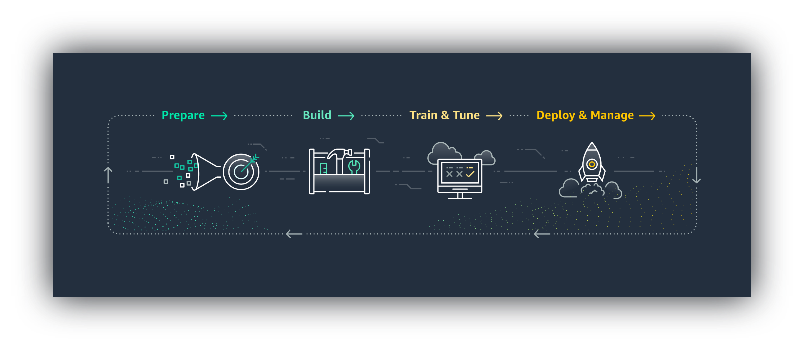

Machine Learning Details
After retrieving and configuring all the advanced statistics from the Web Scraping app, the data is used to train a Machine Learning Model(MLM) on AWS Amazon Sagemaker.
The MLM is trained to predict various stats for any game being played by any two teams. For any prediction being made, fresh data (at least updated from the last two weeks) for the two teams playing is fetched using the existing Webscraping application. This new data set has all the required fields/statistics for the MLM to make a prediction but this time the MLM will not have the values it is trying to predict.
- Using this newly fetched data, the MLM can currently predict the following statistics:
- Winning Percentage (equivalent to Moneyline)
- Point Margin (Spread)
- Game Total Points (Over/Under)
- Home Team Total Points (O/U)
- Away Team Total Points (O/U)
- Leading Scorer Total Points (O/U)